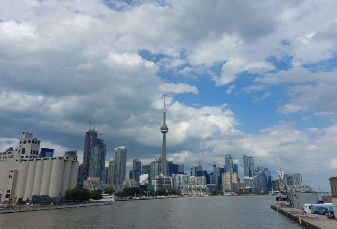
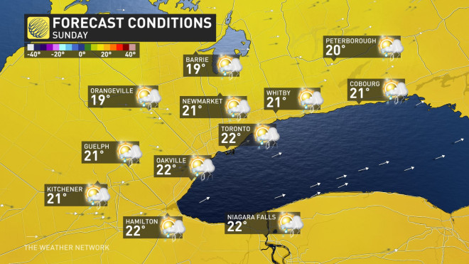
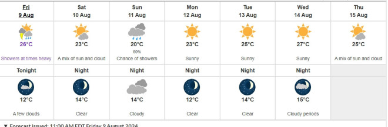

很多人还没有意识到安省的夏季已经剩下最后宝贵的几周，因为秋天即将到来。
继周五的雨水、湿度和洪水风险之后，气象学家表示，本周末将迎来一次提前的秋季天气，包括气温将低于季节水平、风不太像夏天，以及部分地区有更多的降雨。

图源：拍摄
天气网络预测，省内部分地区的气温将降至十几度，与我们之前经历的20多度到30度的晴朗相比，感觉像是夏季提前结束。而现在才刚进入八月。
“周六将是部分晴朗，伴有阵风和偶尔的阵雨，但南安省的大部分地区将保持干燥。温度降低，将比季节平均温度低几度。休伦湖和乔治亚湾东部，温度更低，那里的降雨将更为频繁。”
“周日将带来早秋的天气，伴有西北阵风。多数乡村地区保持十几度的气温，大多伦多地区和尼亚加拉地区达到20多度。”

图源：weather network
GTA以北地区将以雨水和较冷的天气为主，希望在户外或湖边度过一天的人，可能要将计划推迟到下个周末。
接下来的几天会“更像是九月而非八月”，但天气网络称，这并不意味着夏季的结束。下周气温将逐渐回暖，周末有另一场降雨，之后会出现晴朗的天空和更高的气温。

图源：weather.gc.ca
到下周末，我们将回到季节性的、湿度较小的天气，并且可以“谨慎乐观”地预测这种情况将持续到8月底的周末。